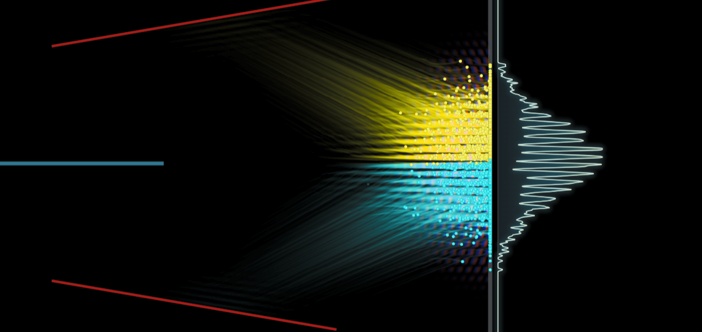

Educational notebook
Delayed Choice
Compare a standard collapse representation with Bohmian trajectories in a delayed-choice interferometer.

The Beam Splitter
Let us build the mystery by starting witht the stardard interpretation.
The incoming wave packet, which also somehow represents the particle, encounters a beam splitter (the bluish line).
The beam splitter splits the wave packet into two parts, one reflected and one transmitted.
It almost looks like it forces the particle to choose a path.
1. If the particle is detected in the upper region (yellow), it must have taken the upper path, right?
2. If the particle is detected in the lower region (blue), it must have taken the lower path, right?
Does the beam splitter "make a particle choose a path?".
Both paths at once
However, Let us adjust the mirrors so that the paths recombine before detection. Now,
if the detector is placed at the intersection of the recombining paths,
there will be interference. The "traditional view" is that the particle has now taken both routes, for otherwise it
would not be able to interfere with itself.
The interference pattern will become visible if we plot many particles at a time.
At detection, physical evolution freezes while the wave-collapse representation is animated.
As opposed to the previous case, where a particle seemed to choose a definite path, here it seems to have taken both paths at once. This should seem dubious. Why would the location of the detector change the decision of the particle to take one path of boht paths? Then again, as we are though, quantum mechanics, is full of such weirdness.
It gets worse however. For realize, that we can change our mind about where to place the detector after the particle has already passed the splitter!
Suppose our detector is first in the far edge position, so that the particle "must take" only one path.
But then, after the particle has already passed the splitter, but before it has reached the detector,
we change our mind, and move the detector to the intersection area. Then the particle would have to go back to the
splitter and decide to take both paths, so as to produce the required interference pattern. Crazy, right?
Either the particle knows the future, or else it has to rewrite its history.
This is how the famous "delayed choice" paradox, with its variations, is usually presented. Makes sense? No? Don't worry. The Bohmian picture cleans this up so well one will have hard time recalling what the original dilemma was supposed to be.
The Bohmian View
In bohmian mechanics, the wave passes into both arms, while each Bohmian particle has one continuous trajectory guided by the local wave field. At the intersection, the particle "receives information" about the other path, even though it never goes that way. You can move the detector by dragging it, or by clicking it.
A trajectory ensemble
Many initial positions sampled from \( |\psi|^2 \) as usual. The detector histogram records where particles arrive. At the intersection the wave experiences interference, and the trajectories weave together to produce the characteristic interference pattern.
The interference pattern emerges from the ensemble of trajectories.
Make the choice
Start the simulation and use the in-scene Detector button while the packet is moving. Change the position of the detector by clicking the button of by dragging it.
Note how there is no confusion about what is going on even though we move the detector after the particle has passed the splitter! Particles and the wave move normally until they meet the detector. In the bohmian picture one would not even think to call this a paradox.
Click the detector during the run to change where detection occurs.
We are not saying this delayed choice paradox cannot be resolved within the standard interpretation (it can). This was just to show how the Bohmian picture makes it so intuitive and straightforward that the original presentation of the paradox seems almost misleading in comparison.